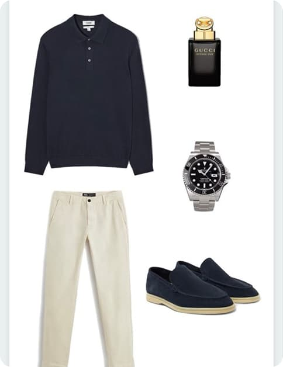

"Коли я народився, батько спитав акушерів: "Хлопчик чи дівчинка?". Вони відповіли: "Мущина""
1. Знай свій тип фігури Одяг має підкреслювати твої фішки, а не приховувати їх.
- V-подібна фігура (широкі плечі, вузькі стегна) — підходять прямі джинси, сорочки з комірцем-стійкою.
- Прямокутник — додай об’єм у плечах або талії (наприклад, жакети або пояси).
- Овал — уникати облягаючих речей, краще вибирати одяг з вертикальними лініями або легкими накидками.

3. Дрес-код — не NPC придумали Перед виходом, подумай, куди ти йдеш: Універ/школа — casual: худі, джинси, кроси. Співбесіда — smart casual: худі, джинси, кросівки
2. Кольорова гама — як вірний помічник
- Теплий тон шкіри? ➜ Кольори: оливковий, помаранчевий, коричневий.
- Холодний тон шкіри? ➜ Синій, сірий, бузковий, бордо.
- Універсальні (тобто всі пасують): чорний, білий, сірий — твій safe zone, як зберегтись у грі перед фінальним босом.